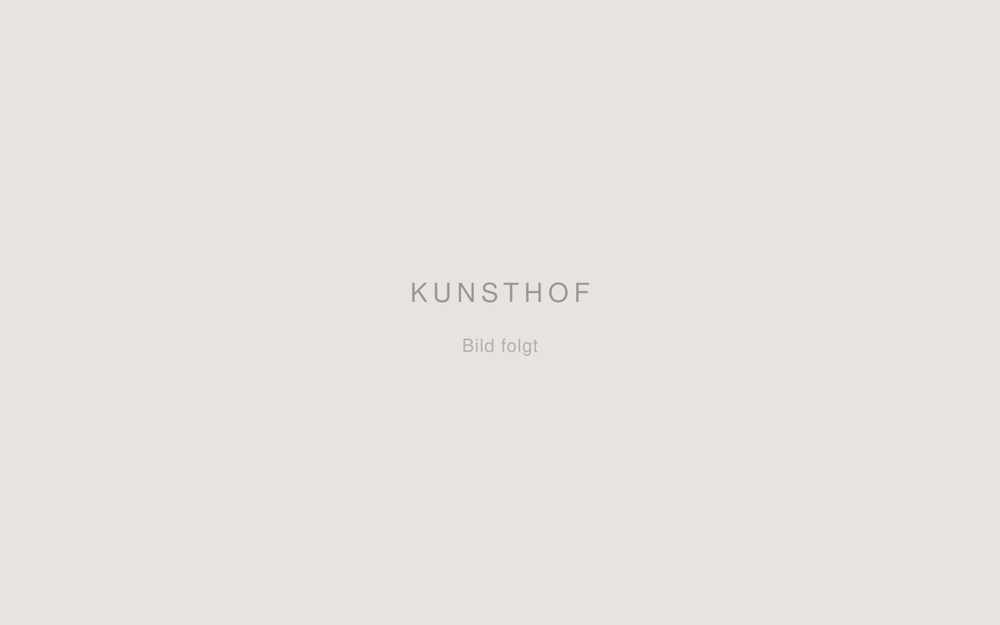
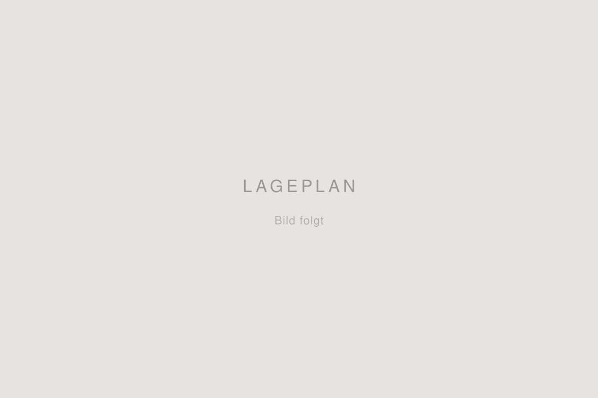
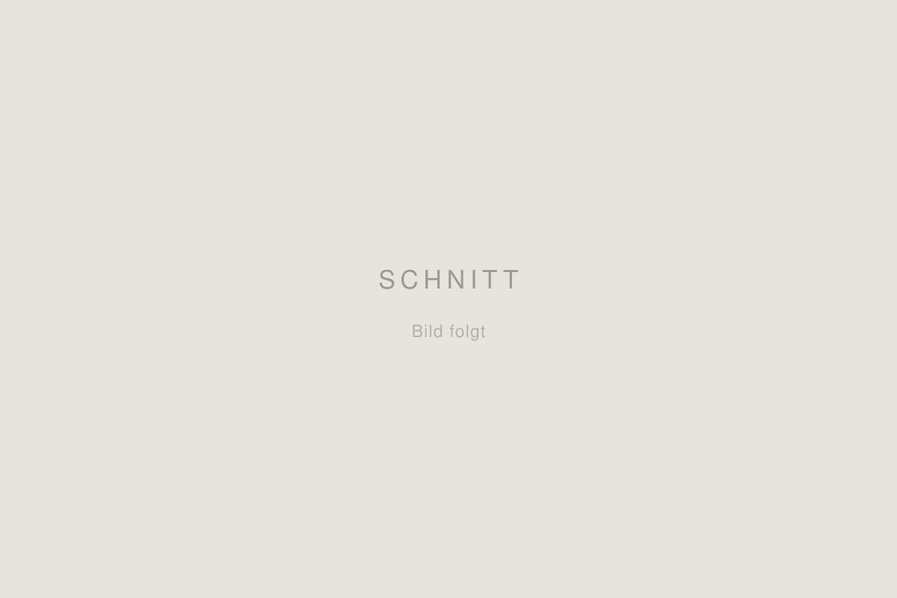
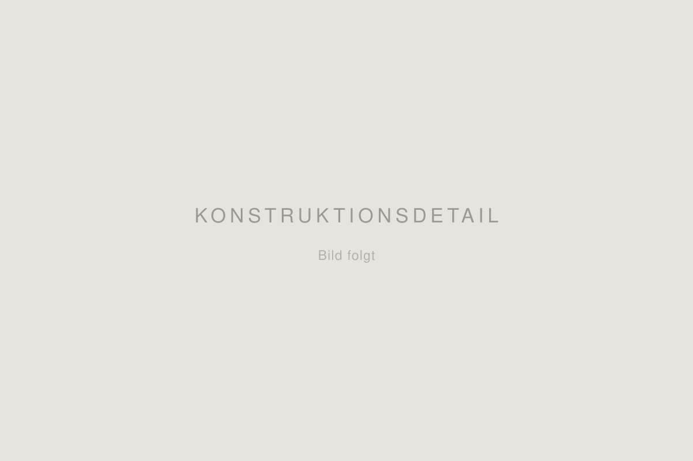
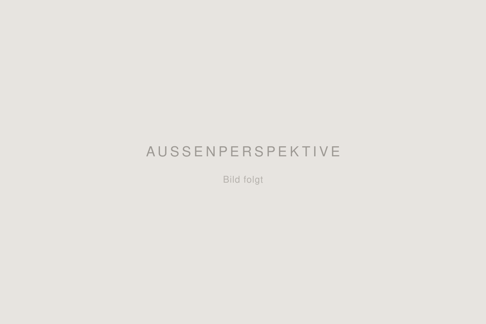
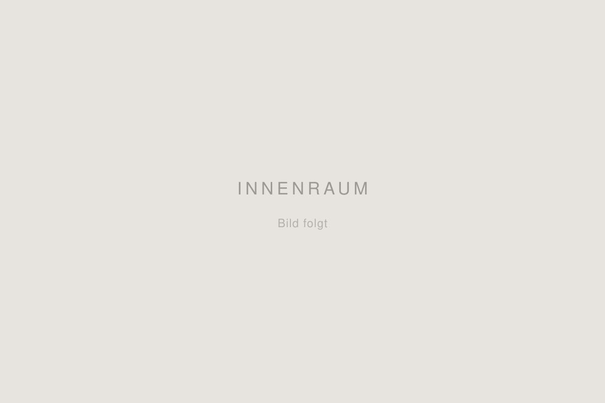

Stand
Im Bauantragsstadium
Eine baldige Realisierung steht in Aussicht.
Rudolf-Steiner-Schule Dortmund
Erneuerung und Erweiterung eines eingeschossigen Kunstpavillons aus den 1970er Jahren. Ein Sanierungskonzept, das flexibel nutzbare Lernräume ergänzt und auf sich verändernde Anforderungen reagiert.

Ausgelobt von der Rudolf-Steiner-Schule Dortmund.
Eine baldige Realisierung steht in Aussicht.
Das Bestandsgebäude aus den 1970er Jahren entspricht nicht mehr den räumlichen und energetischen Anforderungen. Ziel war die Entwicklung eines umfassenden Sanierungskonzepts sowie die Ergänzung flexibel nutzbarer Lernräume. Der Entwurf reagiert gezielt auf sich verändernde Anforderungen und deckt damit verschiedene Nutzungsszenarien ab.
Die Schule saniert derzeit den Unterstufentrakt. Der Entwurf nutzt diesen Zeitraum als erste Nutzungsphase — und ist so konzipiert, dass der Umbau in die zweite Phase ohne Materialverlust gelingt.
Während der Sanierung des Unterstufentrakts dienen die neu geschaffenen Räume rund um den Kunstpavillon als temporäre Klassenzimmer für bis zu vier Grundschulklassen.
Für die Umnutzung wird die Trennwand der Klassenräume jeweils um ein Raster versetzt. So entsteht ein großer Werkraum mit direkt angeschlossenen Lagerräumen.
Darüber hinaus ist der Entwurf so angelegt, dass drei Nutzungen in zwei Räumen stattfinden können. Es gibt feste Räumlichkeiten für textiles Gestalten und Plastizieren. Kunst hingegen kann flexibel in beiden Räumen stattfinden. Entsprechend große Lagerflächen ermöglichen die Unterbringung aller dafür notwendigen Materialien.
Die Gebäude sind bewusst so konzipiert, dass beim Umbau alle Materialien wiederverwendet werden können. Das spart Kosten und Ressourcen.
Durch die Mehrfachnutzung von Räumen steigen Effizienz und Auslastung. Das senkt Bau- und Betriebskosten und reduziert Energie- und Ressourcenverbrauch.
Die flexiblen Nutzungsansätze tragen zusammen mit einer Holz-Stroh-Bauweise zu einem nachhaltigen Gesamtkonzept bei.
Das Gebäudeensemble besteht aus einfachen Baukörpern, die versetzt zueinander angeordnet sind. Dadurch entstehen qualitative Zwischenräume, die für den Unterricht im Freien und die Pausengestaltung genutzt werden können.
Lageplan, Grundrisse, Schnitte und Konstruktionsdetails. Das Bildmaterial folgt.





Projektbeschreibung aus dem Semesterprojekt „Kunsthof — Rudolf-Steiner-Schule Dortmund“ von Luis Bongardt, Sarah Neidhold-Lizarraga und Nicolai Schwarz, Modul BA 3.5.1 — Technischer Ausbau & energieeffizientes Bauen, Alanus Hochschule für Kunst und Gesellschaft, HS 2025/26.